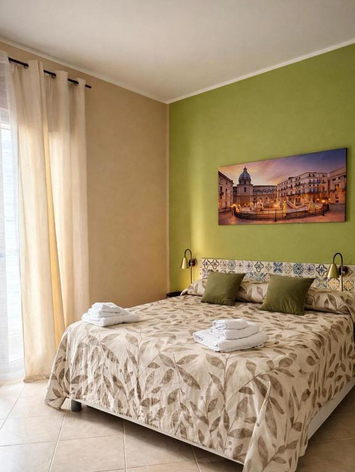
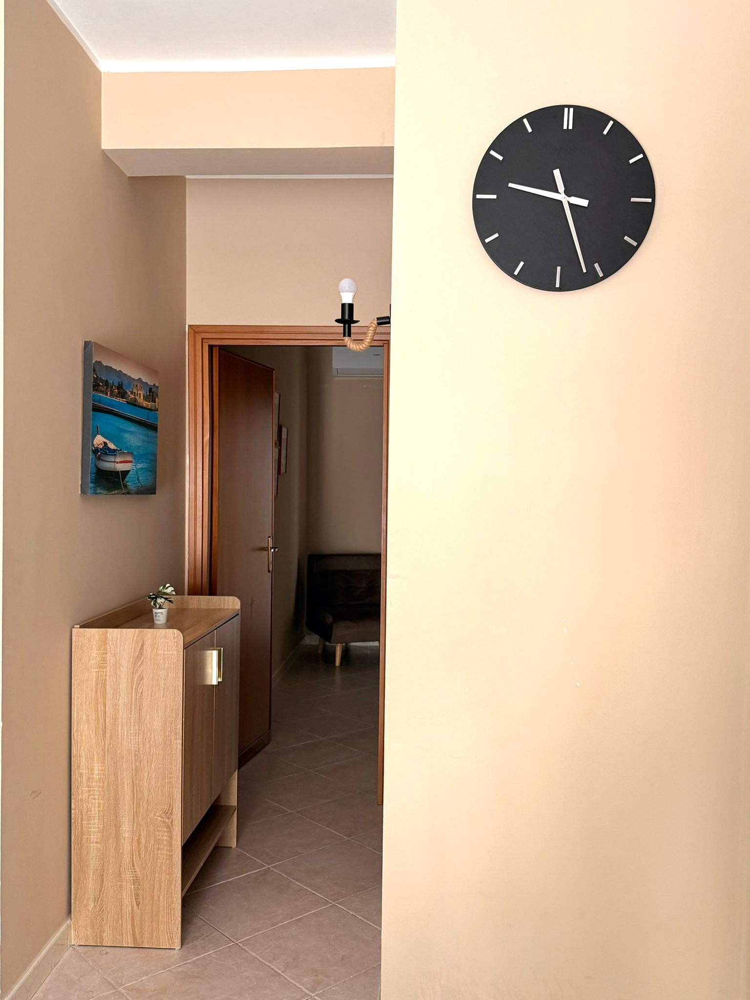
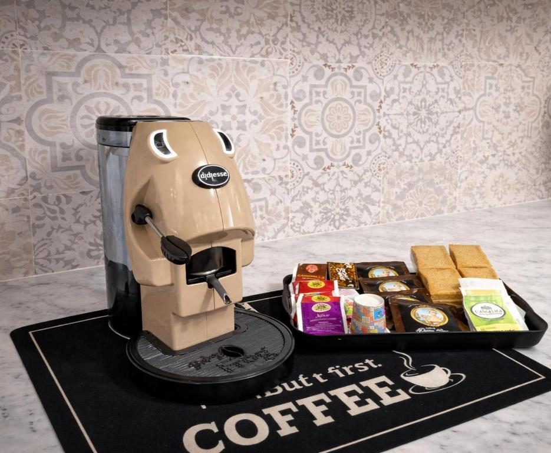

A pochi passi dal centro
Cattedrale di Palermo a circa 500 metri, Teatro Massimo, Quattro Canti, Ballarò, Il Capo e Vucciria facilmente raggiungibili.
Victoria Apartment accoglie fino a 4 ospiti in 61 m² curati nei dettagli, con WiFi gratuito, aria condizionata, cucina privata, balconi e parcheggio privato su richiesta.

Cattedrale di Palermo a circa 500 metri, Teatro Massimo, Quattro Canti, Ballarò, Il Capo e Vucciria facilmente raggiungibili.
Ambienti luminosi, pareti verdi, dettagli decorativi, balcone per colazioni lente e una casa pensata per sentirsi subito a proprio agio.
Cucina attrezzata, lavatrice, ascensore, climatizzazione, WiFi gratuito, biancheria inclusa e posto auto privato a richiesta.
Caffè sul balcone, luce morbida e il centro storico che aspetta a pochi minuti.
Rientro comodo, aria condizionata, lavatrice e cucina pronta per una pausa vera.
Trattorie, mercati, Teatro Massimo e passeggiate tra piazze barocche e profumi siciliani.
Perfetto per famiglie, coppie o piccoli gruppi, Victoria Apartment combina la comodità di una casa completa con la posizione strategica di una zona centrale e tranquilla.
Abbiamo inserito anche i codici identificativi della struttura, così ogni ospite trova subito le informazioni ufficiali prima di contattarci.

Connessione disponibile in tutta la struttura, ideale anche per lavorare da remoto.
Climatizzazione e riscaldamento per un comfort costante in ogni stagione.
Posto auto disponibile sul posto su richiesta: una rarità preziosa in centro.
Servizio navetta disponibile a pagamento dall’Aeroporto Falcone-Borsellino.
Angolo cottura, utensili, frigorifero, macchina da caffè e bollitore elettrico.
Appartamento al primo piano con ascensore, comodo anche con bagagli.
Dedica il primo stop a La Cattedrale di Palermo, poi raggiungi Palazzo dei Normanni e Cappella Palatina, fino a Quattro Canti e Fontana Pretoria.
Colazione lenta, poi Il Capo, Ballarò e Vucciria: street food, botteghe, colori, voci e profumi che raccontano la città.
Mattina tra Teatro Massimo e Politeama, pomeriggio verso Mondello o Foro Italico, rientro in una casa tranquilla e fresca.
L’appartamento si trova in una zona centrale, comoda per raggiungere a piedi monumenti, mercati storici, ristoranti tipici, bar e botteghe artigianali.
Perfetto per visitare Palermo senza dipendere dall’auto.
Una base comoda dove rientrare dopo mercati, monumenti e ristoranti.
Un plus raro in città, utile se arrivi in macchina.

Salvo & Miriam amano far sentire gli ospiti a casa anche lontano da casa: accoglienza attenta, ambiente pulito e rilassante, suggerimenti su cosa vedere e come vivere Palermo senza stress.
Fino a 4 ospiti, ideale per coppie, famiglie o piccoli gruppi.
Sì, è disponibile un posto auto privato sul posto su richiesta.
Sì, la posizione è centrale: molte attrazioni, mercati e locali sono raggiungibili a piedi.
Sì, la struttura offre servizio navetta aeroportuale a pagamento.
Contattaci prima di passare dalle piattaforme: ti rispondiamo personalmente e ti aiutiamo a organizzare il soggiorno nel modo più semplice.